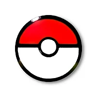

En Alola, Pikachu evolucionará a Alolan Raichu cuando se exponga a una Piedra de Trueno. Pikachu tiene una forma Gigantamax..

| Pikachu | ||
|---|---|---|
| BIOGRAFIA | ¿Que es una pokebola? | Entrenador |
| Pikachu es un Pokémon de tipo eléctrico introducido en la Generación I. Evoluciona de Pichu cuando se nivela con una gran amistad y evoluciona a Raichu cuando se expone a una Piedra de Trueno. En Alola, Pikachu evolucionará a Alolan Raichu cuando se exponga a una Piedra de Trueno. Pikachu tiene una forma Gigantamax.. |
Las antiguas Poké Ball comenzaron a fabricarse en Hisui de manera artesanal. El profesor Nishinomori es el padre del estudio de los Pokémon modernos en Japón. Un descendiente suyo, el profesor Westwood, "inventó" la Poké Ball en 1925. | Ash Ketchum, conocido en Japón como Satoshi, fue el protagonista de la serie de anime Pokémon. Mide 1.45 m, pesa 38 kg y tiene 10 años en el inicio de la serie. Es un Entrenador Pokémon originario de Pueblo Paleta, de la región Kanto. |
|
|  | |